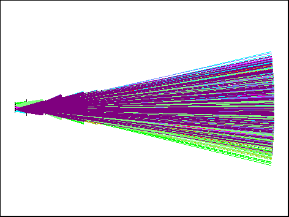
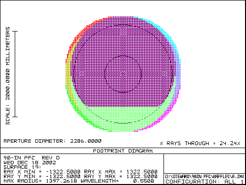
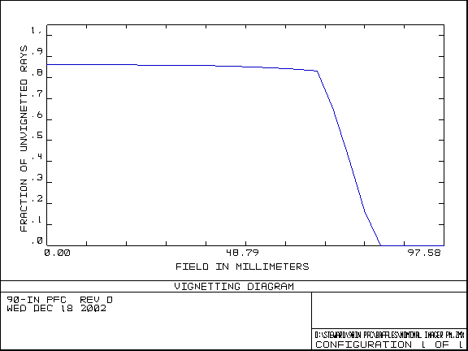

Baffle for the 90-in PFC
Jim Burge
First-order baffles are defined here to limit the effect of stray light on the wide field imager. Without baffles, the focal plane views a significant region outside the primary mirror. Here I present two things that help:
- A set of baffles that attach to the instrument that limit the area that is viewed
- Define the area that needs further baffling
The baffles were optimized so that they do not obscure light from the science focal plane – but just barely. If the baffle surfaces extend further into the beam, they would provide enhanced performance for the stray light, but at the cost of vignetting the images at the edge of the field.
The size of the can is dictated by the clearance of the beam as it passes. The baffle can should not present a new obstruction at the center, so the bottom must not extend beyond 840 mm diameter. This includes a 10 mm wide baffle that blocks the view of the outer edge of the can. So the baffle can is nominally 820 mm outer diameter. The final baffle inside the can is chosen to be 10 mm annulus, which gives 800 mm clear aperture. In order to clear the beam at all points, this can be located 865 mm from Lens 3.
Two addition baffles are placed inside the can to limit the view onto the inside surface. The inside of the can could potentially be illuminated by bright sources in the sky a few degrees off of the line of sight, so it is important that no illuminated surface can be viewed by the CCD
The drawing below shows the dimensions of the baffle can. The vertex of L1 is used a a datum for this drawing
Can outer diameter 820 mm
Vertex of L1 used as datum B3 B2 B1 L1 L2 L3


L1: 865 mm
L2: 761 mm
L3: 443 mm
B1: 840 mm OD
800 mm ID
B2 768 mm ID
B3 666 mm ID
The plot below shows the line of sight viewing for the focal plane

With this baffle the region at the primary mirror viewed by the focal plane is shown below: This shows a 10 inch wide annulus from the edge of the mirror that must be well baffled.

since this is directly viewed by the focal plane, the baffles should do two things:
- Use a good black surface in this annulus
- Minimize illumination of this surface
This is also true for the cone in the center.
As a check of the baffle design, the system thoughput was calculated for the system with the new baffles, including the baffle on the outside of the can and found to cause no significant obscuration. The plot below shows throughput across the field.
